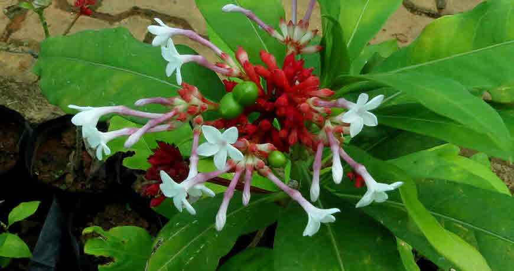

Basonym of Drug
Sarpagandha
Main Synonym
- Nakuli
- Nakuleshta
- Bhujangakshi
- Gandhanakuli
- Sarpangi
- Suarasa
- Mukta
- Dhavalavitapa
- Chandramara
Regional Name
- Gujarati: Nolvel
- Hindi: Nakulkanda, Chotachand, Harkai Chandra
- Marathi: Adakai, Chandra
- Malayalam: Chuvanna Avilpori
- Telugu: Patalagandhi
- English: Serpentine Root
Botanical Name
Rauwolfia serpentina Benth. Ex Kurz
Family
External Morphology
A small glabrous under-shrub
Useful Parts
Important Phytoconstituent
- Ajmalicine
- Serpentinine
- Serpentine
- Sandwicolidine
- Reserpine
- Sarpangine
Rasa Panchak
- Rasa: Tikta
- Guna: Ruksha
- Virya: Ushna
- Vipaka: Katu
Action
Therapeutic Indication
- Nindrajanana (Induce Sleep)
- Apsmarahara (Anti-epileptic)
- Brumhana (Bulk Promoting)
- Shoolaghna (Pain Reliever)
- Jwarahara (Anti-pyretic)
Therapeutic Uses
- Jwara: Root powder with ginger juice and honey is beneficial in fever.
- Switra: Root juice with honey is applied in vitiligo.
- Shlipada: Root paste is taken with water in filariasis.
- Anindra: Hot infusion is taken before bed in insomnia.
Dose
Formulations
- Sarpagandhadi Churna
- Sarpagandha Ghanvati
Adverse Effect
Contraindicated in intestinal ulcers, pregnancy, hyperacidity, renal disorders, depression, and alcoholic patients
Remedial Measure
Not required
Purification
Not required